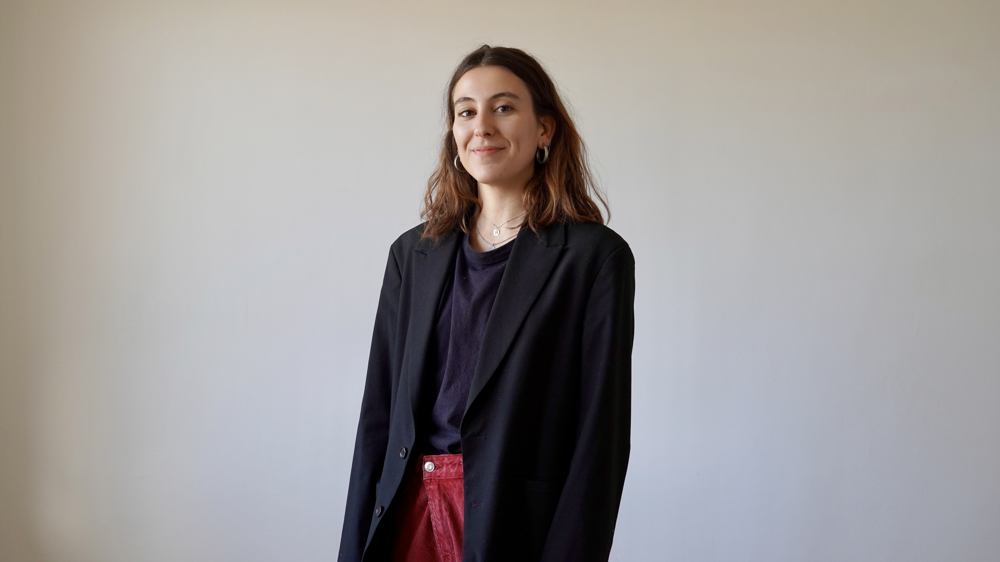
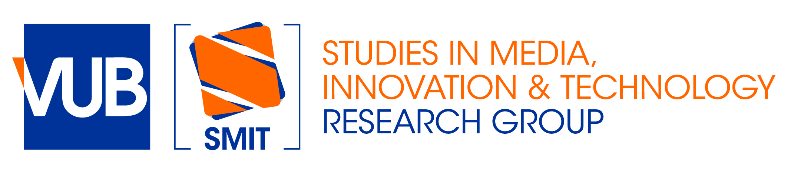
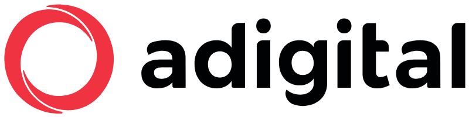
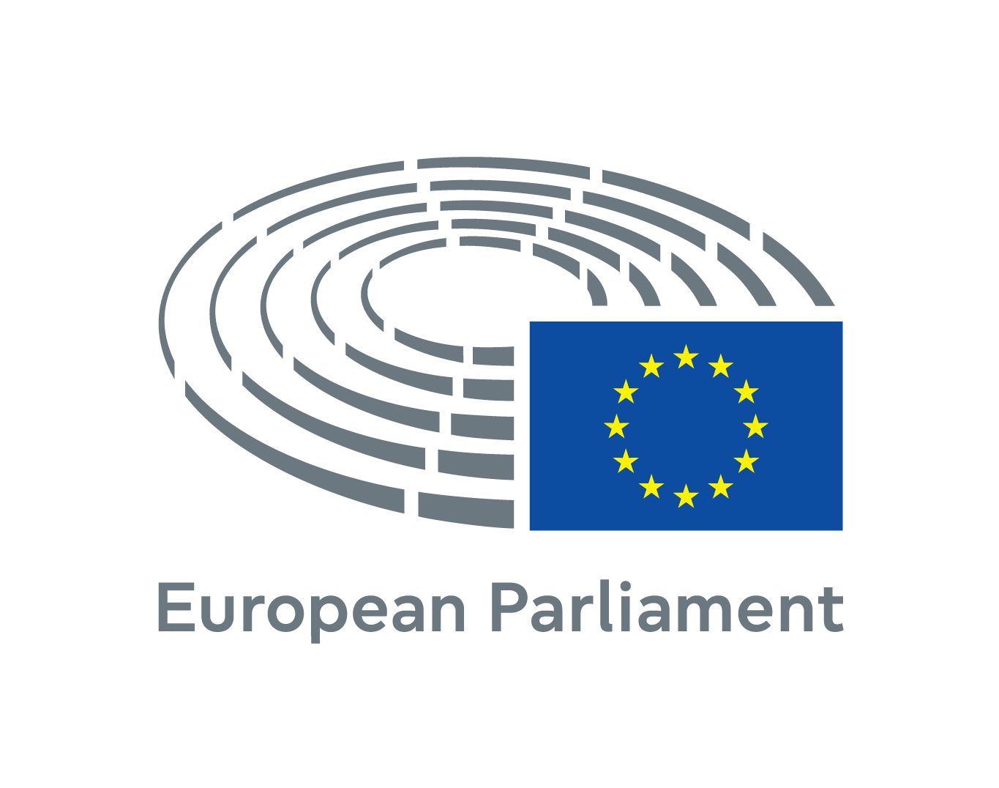

DIGITAL COMMUNICATIONS · MARKETING · CONTENT CREATION · EU & TECHNOLOGY
Raquel Nogal Santamaría
I am a digital communications and marketing professional working across content strategy, social media, email marketing, press and events. My experience spans digital economy organisations, media, international conferences and EU institutions, with a particular interest in technology and digital transformation.
I have managed newsletters, websites, social campaigns, editorial calendars, press materials and multimedia content for audiences ranging from specialised professional communities to large public-facing platforms. I combine strategic communications with content production, audience engagement and performance-driven digital work.

Experience
Full history on CVMarketing and Communications Manager
Lead communications for the Computers, Privacy and Data Protection (CPDP) Conference, managing media relations, social media, email marketing and content for an international conference bringing together 1,200+ participants from 50+ countries. Helped grow LinkedIn to 5,230 followers and the newsletter to 17,300 subscribers with a 71% open rate. I also coordinate a 10-person rapporteur team, oversee the production of the conference magazine and support media partnerships.

Research Assistant
Support research on data spaces, platform governance and data governance models, reviewing regulatory frameworks and analysing their policy implications in European and public-sector contexts.

Communications and Digital Marketing Specialist
Managed Adigital's communications and digital content ecosystem across social media, email marketing, website and blog for an association representing 500+ companies. Ran social campaigns across an ecosystem reaching 66,000+ followers, supported podcast and video production, and contributed to press strategies generating 1,700+ media placements.
Social Media Manager
Created and adapted European news content for a combined audience of 40,000+ followers, turning newsletter stories into platform-specific social content designed to increase accessibility, engagement and audience relevance.

Communications Assistant · Schuman Traineeship
Produced institutional content across the European Parliament Representation in Spain's platforms, including social media, campaign and design materials. Supported high-visibility events and campaigns, including the President of the European Parliament's visit to Spain and Benidorm Fest, and designed the Día de Europa ONCE lottery coupon distributed in 5 million copies across Spain.